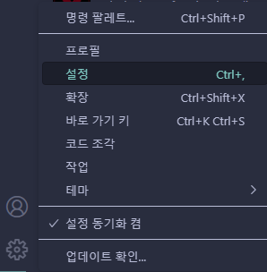

코드 포매터란, 코드를 어떤 특정 스타일에 맞게끔 코드를 수정해서 예쁘게 만들어주는 프로그램입니다.
왼쪽이 포매터를 적용하기 전의 코드, 오른쪽이 적용한 후의 코드입니다.

확장 마켓플레이스에서 Black Formatter를 검색하고 Microsoft사의 Black
Formatter를 설치합니다.
설치가 끝나고 나면, 파일을 편집할 때 Shift +
Alt + F로 포매팅을 할 수 있습니다.
그런데 저장 버튼을 누를때 자동으로 포매팅이 되면 편하겠죠?
왼쪽 밑의 톱니를 누르고 설정으로 들어가줍니다.

파이썬의 default formatter를 Black Formatter로 지정해 줍니다.

format on save를 체크해주면 저장버튼을 눌렀을 때 자동으로 코드를 포매팅해 줍니다.
← 돌아가기